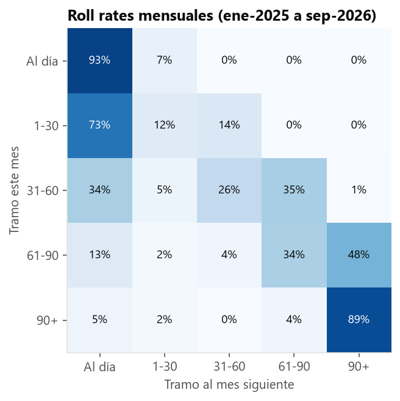

Análisis de cartera y morosidad
Cartera de 5 562 créditos de consumo, microempresa y vehicular en 10 agencias. Calcula el ratio de mora, la migración entre tramos de atraso (roll rates) y las cosechas, y genera una lista diaria de cobranza priorizada.
4,91 %mora > 30 días al corte
73,5 %de 1–30 días se regulariza al mes
47,6 %de 61–90 días cae a 90+
- PostgreSQL
- CTE
- Funciones de ventana
- Vistas materializadas
- Python
- Power BI · DAX
